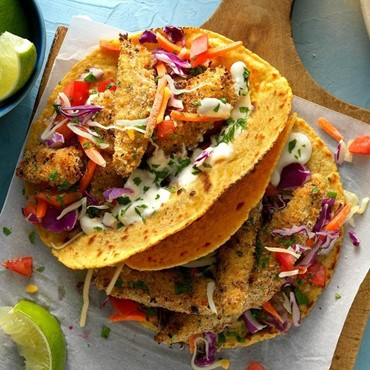

Easy Fish Tacos
What is Easy Fish Tacos?
Fish Tacos recipe! These are loaded with fresh ingredients and perfectly seasoned plump fish. Don’t skip the best fish taco sauce – a garlic lime crema that you will want it on all your tacos!
Ingredients
1/2 cup fat-free mayonnaise
2 teaspoons fat-free milk
1 large egg
1 teaspoon water
1/3 cup dry bread crumbs
2 tablespoons salt-free lemon-pepper seasoning
1 pound mahi mahi or cod fillets, cut into 1-inch strips
4 corn tortillas (6 inches), warmed
1 cup coleslaw mix
2 medium tomatoes, chopped
1 cup shredded reduced-fat Mexican cheese blend
1 tablespoon minced fresh cilantro
Instructions / How to Cook
1. For sauce, in a small bowl, mix mayonnaise, lime juice and milk; refrigerate until serving.
2. In a shallow bowl, whisk together egg and water. In another shallow bowl, toss bread crumbs with lemon pepper. Dip fish in egg mixture, then in crumb mixture, patting to help coating adhere.
3. Place a large nonstick skillet over medium-high heat. Add fish; cook 2-4 minutes per side or until golden brown and fish just begins to flake easily with a fork. Serve in tortillas with toppings and sauce.